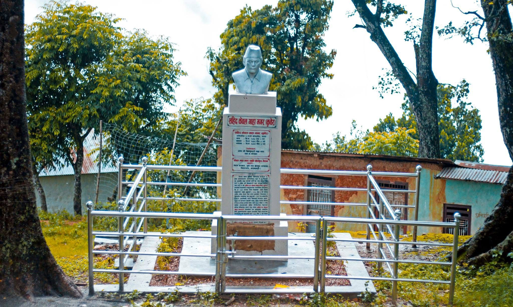

Tall Koldanda
Mount Everest Youth Club
Mount Everest Youth Club
Remembering the bravery, sacrifice, and local history of Sahid Kewal Gaha Magar.

Full Name: Kewal Gaha Magar
Title: Sahid / Martyr
Surname / Community: Gaha Magar / Magar
Birth Date: 2030 B.S.
Death Date: 2058 B.S.
Village / Tole: Tallo Koldanda
Former Area / Ward: Darlamdanda-4
Local Level: Baganaskali Rural Municipality
District: Palpa
Province: Lumbini Province
Country: Nepal
Nationality: Nepali
Native Place: Tallo Koldanda, Palpa, Nepal
Sahid Kewal Gaha Magar was a brave and respected person from Tallo Koldanda, Palpa. He is remembered as a martyr who sacrificed his life for the country, justice, and the rights of people.
From a young age, he cared about society and the problems of ordinary people. He wanted people to live with freedom, equality, and respect.
Sahid Kewal Gaha Magar raised his voice against injustice and worked for positive change. His courage, dedication, and love for the country made him an inspiration for many people.
His contribution is still remembered today. The statue and memorial built in his name keep his memory alive. Local people respect him as the pride of the village.
His life teaches us to love our country, help our community, respect others, and stand for truth and justice. Sahid Kewal Gaha Magar will always be remembered for his bravery, sacrifice, and service to society.
Village life in Tallo Koldanda is simple, peaceful, and connected with nature.
People celebrate festivals, traditions, music, dance, and local customs.
The village has beautiful hills, fresh air, greenery, and peaceful views.
People support each other and work together for village improvement.